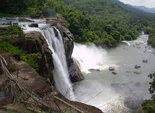
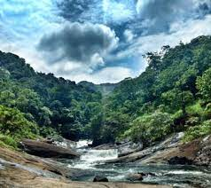

BACKWATERS IN KOZHIKODE
Spread across long stretches of the Arabian water, these beguiling backwater lagoons are a sight to withhold.
EXPLORE

THUSHARAGIRI WATERFALLS
Lying in the Western Ghats of Kozhikode district in Kerala, Thusharagiri Fall cascades down as three waterfalls.
EXPLORE
THIKKOTI LIGHT HOUSE
Said to be built on the remains of a shipwreck, the Thikkoti Lighthouse is one of the major attractions of Kozhikode.
EXPLORE

KOZHIPPARA FALLS
Easily accessible by roads, Kozhippara Falls are situated on the borders of Kakkadampoyil on the Malappuram -Calicut District divide in Malappuram district.
EXPLOREEXPLORE MORE